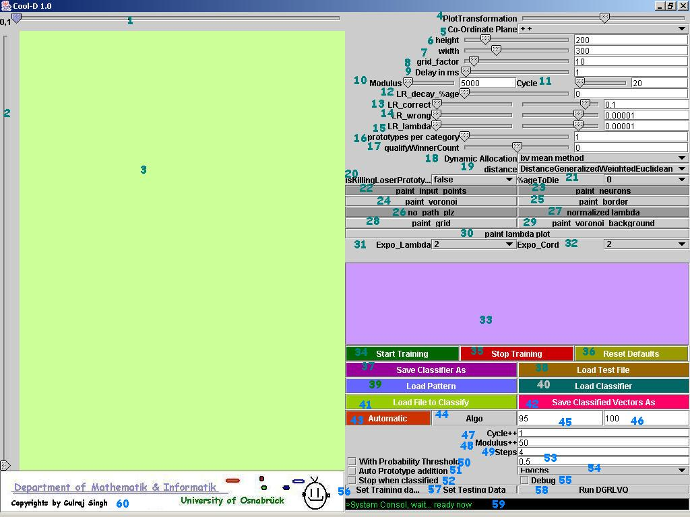

MiniDoc for Cool-D
1. General
Cool-D Distribution:
This library is free software; you can redistribute it and/or modify it under the terms of the GNU Lesser General Public License as published by the Free Software Foundation; either version 2.1 of the License, or (at your option) any later version.
This library is distributed in the hope that it will be useful, but WITHOUT ANY WARRANTY; without even the implied warranty of MERCHANTABILITY or FITNESS FOR A PARTICULAR PURPOSE. See the GNU Lesser General Public License for more details.
You should have received a copy of the GNU Lesser General Public License along with this library; if not, write to the Free Software Foundation, Inc., 59 Temple Place, Suite 330, Boston, MA 02111-1307 USA
Code Written by:
Gulraj Singh, Master of Science in Information Engineering 2002-2004, Department of Mathematics & Computer Science University Osnabrück, Germany gsingh@uos.de or gulrajsingh@yahoo.com
Citation:
If you use or publish any results derived from the use of this program please cite:
“Dynamic-GRLVQ” Algorithm: An application to cancer prediction and Bioinformatics, University of Osnabrück, Germany, Department of Mathematics and Computer Science; University of Twente, Netherlands, Department of Computer Science; Master Thesis Nov 2004 Copyright (C) 2004 Gulraj Singh
Introduction to DGRLVQ algorithm can be found in the master thesis provided along within the package. This document provides an implementation of DGRLVQ that might be used for experimental purposes and research activity, only. Don't use the implementation for any security related tasks.
Requirements:
System with installed JRE( 1.4 and above), Screen resolution 1024x800 and above, Netbeans3.5 and above recommended( if you want to play around with the source code)
Installation:
Copy the whole Cool-D Directory on your local hard-disk. Never run the software directly from the CD because software has features to create reports as text files that is usually easy if installed on local disk.
2. Quick start
Cool-Dv1.0 is a simulation software that is based on the DGRLVQ algorithm for training and testing tasks of the datasets. To run the software, click on the .jar file. in Cool-D directory. Given below is the view of Cool-D's GUI( I have numbered all features for explanations)

1. Dimension selector that has to be plotted on X-Axis( lets say that the dataset vector has dimension of 10. starting from 0 till 9 on left corner [0,1] means that the scatter plot will be shown w.r.t dimension 0(on x-axis) and 1(on y-axis)
2. Dimension Selector. Move the slider to select the dimension that has to be plotted on Y-Axis
3. Scatter plot area.
4. If the points are out of the plot, by increasing or decreasing "plot transformation" one can adjust the view.
5. Plot is drawn w.r.t 1-coordinate(++) 2nd coordinate(- +) 3rd (- -) 4th( + -)
6. Height of plot
7. Width of plot
8. If printing of grid is allowed(28) than how congested that grid can be given here.
9. For manual training, how many milliseconds to wait between each update cycle for proper visualization.
10. After how many updates the network is checked for addition or removal of prototypes( please note, total updates= Modulus X Cycles)
11. How many times to check.
12. Learning rate decay.
13. Learning rate correct.
14. Learning rate wrong.
15. Learning rate for relevance.
16. Initial number of prototypes for each category in network.
17. Qualify Winner count.
18. Dynamic allocation method
19. Distance metric used.
20. Killing of loser prototypes( with qualify winner count less than threshold)
21. %age per class of prototype that can die at any given update.
22. plot data vectors.
23. plot prototypes.
24. plot voronoi.
25 plot the border of plot.
26. to show the path transverse by prototypes.
27. Normalize relevance factor.
28. plot grid.
29. fill voronoi area with color.
30. plot relevance factor.
31. power of relevance.
32. power of distance metric.
33. event display.
34. start training
35. stop training.
36. reset the GUI with default values.
37. after training, one can save the DGRLVQ classifier as a file.
38. If classifier is loaded, test file can be tested to measure the performance.
39. Loads the training data. format of training data is as following:
atr0 atr1 ... atrN ClassLable
where dimension of data is N+1. Each attribute, atr_i, is real number. ClassLable is natural number >=0
40. Loads the DGRLVQ classifier.
41. Loads files to classify
42. Saves classified vectors.
43. Automatically loads training and testing datasets from a directory and creates report of results.
44. Automatically loads the whole dataset, divide it into training and testing sets, trains on training set, creates the DGRLVQ classifier, test the testing set on classifier, creates the report of results and repeat the process D-Times. The division of training and testing set depends on the value of field(45) and the value of D comes from field(46).
45. the present of test set for division.
46. the number repetition, D-Times.
47. After each D-Runs, the value of cycles till to be increased.
48. the increment in modulus after each step.
49. number of times the increase in modulus to be observed.
50. Classify results with probability method.
51. If automatic prototype addition is switched ON
52. Stop training when training is observed to be completed.
53. Probability threshold.
54. Watching.
55. Debug.
56. Set a single training dataset for D-Runs
57. Set a single testing dataset for D-Runs
58. Run the algo on training and testing dataset( from 56 and 57)
59. Consol.
60. Logo.
3. Fast demo
Training:
Run cool-D by clicking .jar file in Cool-D Directory.
Click 39(load pattern) and file browser will appear.
select training file cb.2d.txt0_train.txt under directory ./Cool-D/codebook/checkerboard/
change the learning rate Correct(13) to 0.1 ; write 0.1 in the box and press enter key.
change the learning rate wrong(14) to 0.01
change the learning rate lambda(15) to 0.001
change Modulus(10) to 500
change Cycle(11) to 6
change delay in ms(9) to 10
And finally push Start training(34) and watch the animation on the left
Testing:
As the training stops itself after completing all updates OR you can also stop it by pushing Stop training(35)
Push Save classifier as (37)
Save the classifier as a file somewhere. for example name it as cb.2d.txt0_train.txt.clfr
Push Load classifier(40)
Select the save classifier cb.2d.txt0_train.txt.clfr
Push Load test file(38)
select test file cb.2d.txt0_test.txt under directory ./Cool-D/codebook/checkerboard/
You can view the results in panal(33)
Automatic demo:
Now click the Automatic(43)
select again training file cb.2d.txt0_train.txt under directory ./Cool-D/codebook/checkerboard/
Wait for a while; please note no animation will be displayed. animation is only available for manual training.
Now look for some files generated in the directory ./Cool-D/codebook/checkerboard/ named as log_M=500_C=6.txt log_M=550_C=6.txt log_M=600_C=6.txt and log_M=650_C=6.txt where M=Modulus C=Cycle
Here, all the training datasets were loaded, training was conducted, classifiers were generated, testing was done and result report was created.
Automatic D-Runs on complete dataset:
Change the value of testing split (45) to 25.
Push Algo(44)
select the full dataset file cb.2d.txt under directory ./Cool-D/codebook/checkerboard/
wait for a while and have look on the generated .html files in the directory ./Cool-D/codebook/checkerboard/ for eg. log_M=500_C=7_P=25_D=100.html where M=Modulus, C= Cycles, P=TestSplit %age and D= Number of Runs.